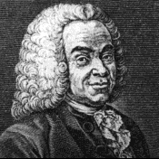
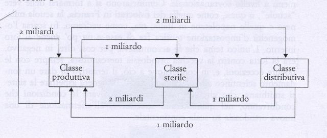

La scuola fisiocratica si sviluppò nel secolo XVIII nella Francia dei filosofi illuministi e il suo fondatore fu François Quesnay (filosofo e medico della corte di Luigi XIV). Gli esponenti di questa scuola di pensiero sostenevano che esisteva un ordine economico naturale, basato su leggi fisiche necessarie e inderogabili e su leggi morali che l’uomo doveva adottare nel suo interesse. Compito dell’economia era scoprire le leggi naturali che stavano alla base della produzione e distribuzione dei beni. L’esistenza di un ordine naturale rendeva dannoso qualsiasi intervento regolatore dello stato. Secondo questa scuola solo la natura era produttiva di ricchezza in quanto moltiplica i beni: l’agricoltura è l’unica attività economica produttiva, mentre le altre risultano sterili in quanto si limitavano a trasformare i beni prodotti. Quindi al termine del processo produttivo il sovrappiù creato dalla classe produttiva dei contadini era reinvestito in un nuovo ciclo produttivo dalla classe dei proprietari terrieri.

(Mère,
Seine-et-Oise 1694 -
Versailles 1774), economista francese, principale fondatore della
scuola fisiocratica. Sudiò medicina chirurgica nella capitale
francese e diventò dottore in medicina nel 1744; fu in seguito
nominato "medico ordinario" del re Luigi
XV. Profondamente
interessato all'economia, Quesnay scrisse, fra il 1756 e il 1757,
vari articoli sull'argomento per l'edizione aggiornata
dell'Enciclopedia di Denis
Diderot. Il medico Quesnay studiava la struttura economica su cui si
appoggiava l'organismo sociale come se si trattasse di un organismo
naturale. Nel suo Tableau
économique
(Quadro economico, 1758), presentò poi quella che egli
considerava la legge naturale
dell'economia. Quesnay
e i suoi seguaci, i fisiocratici,
tra i quali si annoverano Pierre Samuel du Pont de Nemours e Victor
Riqueti, marchese di Mirabeau, sostenevano che il commercio e
l'industria sono sostanzialmente improduttivi e che solamente
l'agricoltura può accrescere il benessere. Affinché la
nazione prosperi, asserivano i fisiocratici, si deve lasciare agire
la legge economica senza interferenze: principio che è uno dei
fondamenti della dottrina liberista, ripreso da A.Smith (fondatore
della scuola economica classica).
Le origini del pensiero liberista
La premessa fondamentale era che esiste un ordine naturale della società analogo a quello che si ritrova nella natura fisica. Ma questo ordine naturale esiste solo se gli uomini non ne ostacolano la realizzazione. Interessati soprattutto all'analisi economica, i fisiocratici si opponevano al mercantilismo, che individuava nel commercio internazionale la fonte della ricchezza dello stato.In effetti gia ai tempi di Quesnay il settore agricolo aveva cominciato a perdere in Francia preminenza economica. Ciò vale almeno in parte a spiegare il rapido declino del contributo fisiocratico gia alla fine del 700. Per loro, invece, la fonte era la terra, dal momento che essa era l'unico fattore di produzione in grado di generare valori aggiunti. Solo la terra era capace di fornire un prodotto netto, un surplus rispetto agli investimenti apportati. L'agricoltura, perciò, era in grado di produrre, mentre l'artigianato e la manifattura trasformavano soltanto. La classe agricola degli imprenditori e degli affittuari era quindi, per i fisiocratici, produttiva, mentre artigiani, commercianti, manifattori e liberi professionisti costituivano la classe sterile; i proprietari fondiari, il clero, i funzionari pubblici e il sovrano, infine, si identificavano con la classe oziosa. Costoro ricevevano sotto forma di rendite, decime o imposte il prodotto netto, che poi, attraverso i loro consumi, redistribuivano alla classe sterile e a quella produttiva. I fisiocratici erano quindi favorevoli al libero commercio dei prodotti agricoli e particolarmente interessati allo sviluppo dell'agricoltura. Poiché lo stato si doveva impegnare a garantire la libertà, la proprietà e la sicurezza, si giustificava il prelievo fiscale, che doveva essere però attuato sul prodotto netto attraverso un'imposta diretta e reale sulla terra, che gravava quindi unicamente sui proprietari fondiari. di fronte all"ordine positivo", cioè dalle leggi e dalle istruzione della società organizzata, era di non interferire. In questa maniera venne, per così dire, "dimostrata scientificamente" la massima di Guornay - laissez faire, laissez passer les marchandises - ; le merci andrebbero spontaneamente verso i settori che ne abbisognano, in tal modo assicurano la riproduzione dell'organismo sociale, in quetso consiste la base del pensiero liberista.
Il grafico rappresenta
le tre classi sociali e i flussi di moneta
mediante cui esse si scambiano la merci. All'inizio dell'anno la classe
produttiva paga 2 miliardi di rendite alla classe distributiva, 1
miliardo alla classe sterile per acquis

tare manufatti e spende 2 miliardi all'interno del settore agricolo per scambiare materie prima, beni salari e mezzi di produzione. La classe distributiva spenderà il suo reddito per 1 miliardo presso la classe sterile, per un altro presso la classe produttiva, per acquistare manufatti e prodotti agricoli . La classe sterile che ha ricevuto2 miliardi, 1 dall' aristocrazia e 1 dagli agricoltori, li spenderà tutti presso la classe produttiva per acquistare i suoi input e i suoi consumi necessari. Alla fine i 3 miliardi che la classe produttiva ha speso al di fuori del settore agricolo le saranno tornati indietro; così il ciclo potrà rincominciare.
Aa.
Vv. dibattito sulla fisiocrazia,
La Nuova Italia, Firenze, 1979
A. Maffey
L'autopia della ragione,
Bibliopolis, Napoli 1987
E.Screpanti
- S. Zampagni "Profilo di
storia del pensiero economico" Carrocci 2004